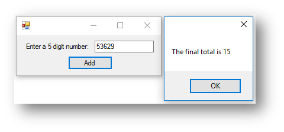
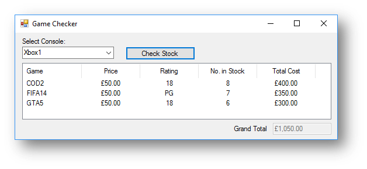
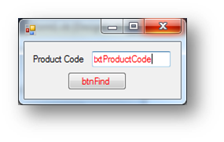
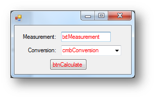

Inputting & Outputting Data
If you want to display something on screen in Visual Basic you can do it in a number of ways. The most common ways you will use are by Message Box or List Box.
To input data in Visual Basic there are lots of different form controls that you can use to do this, the most common ones are text boxes and combo boxes.
Inputting - Creating an Interface
Visual Basic have two main parts to it. The first part is creating the user interface, this is a simply drag and drop environment where you can add different form controls such as a text box.
The second part to it is creating the code to make the user interface do/display something.
When creating an interface, there are different types of form controls. Some of those that you will use are:
- Label - used to display text on an interface
- Text Box - used to allow the user to type in some text
- Combo Box - used to give a set of options to the user
- List Box - used to provide a list of options to choose from or display a list of information that has been calculated in the program.
- Button - these are often used so when the user clicks on them something happens.
In Visual Studio on the left hand side you have the toolbox, this is where you can drag and drop your form controls. It looks like this:
When you have dragged your form controls onto your form, you need to name them. You should add a prefix to any form control, the common ones are:
- Labels - lbl
- Text Boxes - txt
- Combo Boxes - cmb
- List Boxes - lst
- Buttons - btn
If you had a text box where the user enters their name a suitable name would be txtName.
Difference between naming a control and changing the text You must always name controls, this can be done in the properties next to the option name, as shown below:
If you want to change what the form control says on it, you change the option text, as shown below:
Outputting Data - Message Boxes
Below is an interface where the user will enter a word. When they enter the word in the text box called txtWord and press the button called btnRun it will display a message box that says what word they entered.
Interface
Code when btnRun clicked
MessageBox.Show("You entered the word " & txtWord.Text)
This is what happens when the button is clicked:
The text “You entered the word” is joined with the text box txtWord. As the user entered the word Hello it takes what it is in the text box and adds it into the message box.
Example program 1 - Birthday Program
The code for the program below will allow the user to enter their name, select the day of the week that their birthday falls on this year and then choose the month of their birthday from the list box. When they click the button it should display all the information back to them.
Interface
Code when btnBirthday clicked
MessageBox.Show("Hello " & txtName.Text & vbNewLine & "Your birthday month is " & lstMonth.Text &
" and the day of the birthday this year is " & cmbDay.Text)
This is what happens when the button is clicked:
Example program 2 - Address Program
The code for the program below will allow the user to enter various pieces of information. It will then use the information in these form controls to create a message box with all their information in.
Interface
Code when btnDisplay clicked
MessageBox.Show("Address Details" & vbNewLine & "Street: " & txtNumber.Text & " " &
txtStreet.Text & vbNewLine & "Town/City: " & txtTown.Text & vbNewLine &
"County: " & txtCounty.Text & vbNewLine & "Postcode: " & txtPostcode.Text)
This is what happens when the button is clicked:
You can concatenate (join together) controls with strings in a MessageBox.Show() command. In the address example MessageBox.Show("Street: " & txtnumber.Text & " " & txtStreet.Text & vbNewLine & "Town/City: " + txtTown.Text) will combine the strings “Street” and “Town/City” with the form controls txtNumber, txtStreet and txtTown.
vbNewLine is used to start a new line when it is displayed on screen.
Outputting Data - List Boxes
One of the other methods of outputting data is through a list box.
To add data to a list box you need to use the following code:
Listboxname.Items.Add(Data to add to list box)
Consider the following interface:
To add the name entered and the email address entered to the list box when the button is clicked you need the following code:
Code when btnAdd clicked
lstOutput.Items.Add(txtName.Text & vbTab & txtEmail.Text)
This is what happens when the button is clicked:
You can add multiple rows of data to a list box. You can simply change the information in the text boxes and click the button again. vbTab is used to put a tab space between the two pieces of data.
Sometimes when you use list boxes it makes it difficult to make the formatting look neat, this is shown in the screenshot above where the data is not lined up. To overcome this problem you can use a list view.
With a list view box you can add columns and headings to make it look like a table, like the example shown below:
When you add a list view control, you have to change a property to get it to work. Change the view from Large Icon to Details, like shown below:
The code for when the button is clicked needs to follow the following format:
LISTVIEWBOXNAME.Items.Add(New ListViewItem({COLUMN1, COLUMN2, COLUMN3, COLUMN4, COLUMN5}))
For this example, the code would be:
lstOutput.Items.Add(New ListViewItem({txtName.Text, txtEmail.Text}))
This is because there are only two pieces of information, therefore you only need to fill in the information you want in two of the columns.
As well as adding code for when the button is pressed, you also need to add the column headings when the form loads. You should double click on the form itself and add the code in this subroutine. The format of the code for the column headings is:
LISTVIEWBOXNAME.Columns.Add(“Text”, Size , Alignment)
In this example as there are two headings the code would be:
Private Sub Form1_Load(sender As System.Object, e As System.EventArgs) Handles MyBase.Load
lstOutput.Columns.Add("Name", 150, HorizontalAlignment.Left)
lstOutput.Columns.Add("Email", 250, HorizontalAlignment.Left)
End Sub
Example 3 - Test Scores - Using List View
The code for the program below will allow the user to enter a name and three test scores. When btnAdd is clicked it will add the information to the list box.
Interface
Private Sub btnAdd_Click(sender As System.Object, e As System.EventArgs) Handles btnAdd.Click
lstOutput.Items.Add(New ListViewItem({txtName.Text, txtScore1.Text, txtScore2.Text, txtScore3.Text}))
End Sub
Private Sub Form1_Load(sender As System.Object, e As System.EventArgs) Handles MyBase.Load
lstOutput.Columns.Add("Name", 150, HorizontalAlignment.Left)
lstOutput.Columns.Add("Score 1", 75, HorizontalAlignment.Center)
lstOutput.Columns.Add("Score 2", 75, HorizontalAlignment.Center)
lstOutput.Columns.Add("Score 3", 75, HorizontalAlignment.Center)
End Sub
This is what happens when the button is clicked:
Variables
A variable is used to temporarily store a piece of data.
For example:
Dim number1 As Integer = 10
In the code above the variable is called number1 and the value it is storing is 10. Variables can hold any type of data. Using variables makes it easier for people to understand what is going on. In Visual Basic you need to define a variable before you can use it. To do this you type Dim before the variable name the first time you use it. You should then say what type of data you think it is. In this example number1 is an integer therefore the code to define a variable called number1 as an integer is Dim number1 as Integer
For example:
Dim cost As Decimal = 15.5
Dim VAT As Decimal = 3.1
Dim total_cost As Decimal = cost + VAT
Example program 1 - Water Tank Capacity Program
The code for the program below will allow the user to enter the height, width and depth of a water tank, then calculate and output the capacity.
Interface
Code when btnCapacity is clicked
'three variables that store the text box inputs from the interface as a decimal
Dim height As Decimal = txtHeight.Text
Dim width As Decimal = txtWidth.Text
Dim depth As Decimal = txtDepth.Text
'calculation to work out the capacity
Dim capacity As Decimal = (height * width * depth) / 1000
'outputs the capacity of the water tank
MessageBox.Show("The tank holds " & Decimal.Round(capacity, 2).ToString & " litres of water")
This is what happens when the button is clicked:
The code above rounds the variable capacity, to round a variable you use the Decimal.Round() function. You write the name of the variable followed by the number of decimal places e.g. Decimal.Round(capacity,2). Also note that it has .ToString after it, this is because any variable that is not a string data type much be converted back to a string before it can be displayed in a message or list box.
Example program 2 - Cylinder Volume Program
The code for the program below will allow the radius and height of a circle, then calculate and output the volume and surface area.
Interface
Code when btnCalculate is clicked
'three variables that store the two inputs from the interface and the value of pie
Dim radius As Decimal = txtRadius.Text
Dim height As Decimal = txtHeight.Text
Dim pie As Decimal = 3.14159
'calculations to work out the volume and surface area
Dim volume As Decimal = pie * (radius * radius) * height
Dim surfaceArea As Decimal= 2 * (pie * (radius * radius)) + 2 * (pie * radius * height)
#outputs the volume and surface area of the cylinder in a message box.
MessageBox.Show("The volume of your cylinder is: " & Decimal.Round(volume, 2).ToString & " to 2 decimal places" & vbNewLine & "The surface area of the cylinder is: " & Decimal.Round(surfaceArea, 2).ToString & " to 2 decimal places.")
This is what happens when the button is clicked:
Selection (if, then, else)
Sometimes you will change what do you depending on the conditions.
For example: IF you wake up in the morning and it is raining THEN you will take a coat to school OTHERWISE you wont.
IF the day is a Saturday AND the alarm clock goes off THEN you might turn it off and stay in bed OTHERWISE you might get up.
Life is full of decisions that you will make depending on certain conditions, computers are no different.
if-else
For a computer to make decisions based on a condition, you must use an IF statement, it has the following structure:
If condition Then
true
several instructions that are executed
if the calcualation evaluates to True
Else
false
several instructions that are exectued
if the condition evaluates to False
End If
Consider the following IF statement:
Dim age As Integer = txtAge.Text
If age >= 18 Then
MessageBox.Show("You are an adult")
Else
MessageBox.Show("You are still a child")
End If
The IF statement explained:
- after the
ifis the conditionage >= 18, this is checking to see if the age variable is more than or equal to 18. - after that line is code is the code that will only be run if that condition is
True. If it is true it will display a message box that saysYou are an adult. - the word else then follows. The instructions underneath this are what will be run only if that condition is
False. If it is false it will display a message box that saysYou are still a child.
if-elseif-else
An IF statement with an else will only allow you to check a single condition, however if you have more than one condition to check you can use if..elseif..else
Consider the following IF statement:
Dim colour As String = cmbColour.Text
If colour = "Red" Then
MessageBox.Show("STOP")
Elseif colour = "Amber" Then
MessageBox.Show("GET READY TO STOP")
Else
MessageBox.Show("GO")
End If
The IF statement explained:
- the program first checks to see if the colour selected in the combo box on the interface is
Redand if it is will display a message box sayingSTOP. - if the colour selected isn’t red it will go onto the next condition where the
Elseifis and check if the colour isAmber. If it is then it will display a message box sayingGET READY TO STOP - if neither conditions are met it will go to the
Elsepart of the code and display a message box sayingGO.
NOTE: It doesn’t need to use Elseif to see if the colour is Green as if it isn’t Red or Amber it must be Green, therefore you can just use else if there are not other options to consider.
Example program 1 - Capital City
The code for the program below ask the user the capital city of England and display a suitable message depending on whether they enter London.
Interface
Code when btnCheck is clicked
'stores the user selection from the combo box in the variable city
Dim city As String = cmbCity.Text
'checks if the city variable has London stored in it
If city = "London" Then
'displays correct if the condition is true
MessageBox.Show("Correct, the capital city of England is: " & city)
Else
'displays wrong if they have entered something else
MessageBox.Show("Wrong, try again!")
End If
This is what happens when the button is clicked:
Example program 2 - Grade Calculator Program
The code for the program below will ask the user to enter a score on a test and then decide what grade they got.
Interface
Code when btnGradeCheck is clicked
Dim score As Integer = txtScore.Text
If score >= 70 Then
MessageBox.Show("That test score is an A grade")
ElseIf score >= 60 Then
MessageBox.Show("That test score is a B grade")
ElseIf score >= 50 Then
MessageBox.Show("That test score is a C grade")
ElseIf score >= 40 Then
MessageBox.Show("That test score is a D grade")
Else
MessageBox.Show("That test score is a U grade")
End If
NOTE: When ElseIf is used it will only check the next condition If the previous condition is false.
This is what happens when the button is clicked:
Example program 3 - Taxi Fare Calculator Program
The code for the program below will calculate the fare for a taxi ride depending on the distance and number of passengers. It should add 50% onto the total if there are more than 5 passengers.
Interface
Code when btnFare is clicked
'declares a variable called distance to store the distance entered
Dim distance As Integer = txtDistance.Text
'declares a variable called passengers to store the number of passengers entered
Dim passengers As Integer = txtPassengers.Text
'declares a variable called cost and then uses a calculation to work out the cost
Dim cost As Decimal = 3 + ((distance - 1) * 2)
'checks to see if the number of passengers is more than 5 so that the additional 50% cost can be added
If passengers > 5 Then
'calculates the extra cost if the condition is true
cost = cost * 1.5
End If
'a message box to display the total cost of the journey
MessageBox.Show("The cost of the journey is: " & FormatCurrency(cost).ToString)
Important Points to Note
- there is no
Elseon thisIf, you do not need to have one. An if can just check a condition and do something if it isTrueand nothing if it isFalse - in the
MessageBox.Show()command the cost is formatted to currency, this is done by writingFormatCurrency(variable)
This is what happens when the button is clicked:
Validating Data
What is Validation?
Validation is the process of checking to see if data that is entered meets a set of requirements, this does mean it will always stop incorrect data being entered. For example if you had to enter a telephone number, you could validate it and say it needs to be 11 digits starting with a 0. The user could enter 01234567891, this meets the requirements set, but does not mean it is a valid telephone number.
There are some simple ways in which you can validate programs, these are:
- Type Check - checking the data is of a particular type before continuing
- Presence Check - checking that data is entered before continuing
- Range Check - checking that data is between two boundaries set
- Format Check - checking that data follows a set format
Type Check Example
In Visual Basic you can easily do a type check to check whether a value is a number or not a number, see the example below:
Interface
Code when btnRun is clicked
Dim IsNumbers As Boolean = IsNumeric(txtNumber.Text)
If IsNumbers = True Then
MessageBox.Show("What is entered in txtNumber is a number")
Else
MessageBox.Show("What is entered in txtNumber is not a number")
End If
IsNumeric will return a value either True or False after checking to see if a variable or form control is a number. You can then use an If to determine what to do.
This is what happens when the button is clicked:
| Number entered | |
|---|---|
| Text entered |
Presence Check Example
In Visual Basic you can use the len() function to find the length of a variable or form control. You can then check to if the length is 0 and if it is this means nothing has been entered, see the example below:
Interface
Code when btnCheck is clicked
If Len(txtNumber.Text) = 0 Then
MessageBox.Show("Please enter a number")
Return
Else
MessageBox.Show("Welcome to the program")
End If
The len() function will return the length of the data stored in a variable/control. If the length is 0 this means nothing has been entered. Return can be used in a program as it will prevent any further code being executed. It stops the program running.
This is what happens when the button is clicked:
| Nothing entered | |
|---|---|
| Something entered |
Range Check Example
You can also validate data by making sure it is within a certain range. For example, entering a test score you could say that it must be between 0 and 100. An example of how you could use a range check is shown below:
Interface
Code when btnCheck is clicked
If txtNumber.Text > 0 And txtNumber.Text <= 100 Then
MessageBox.Show("You entered a valid number")
Else
MessageBox.Show("You must enter a number between 1 and 100")
End If
To perform a range check you can simply use an If and then use And to connect two conditions together.
This is what happens when the button is clicked:
| Entered out of range | |
|---|---|
| Entered within range |
Format Check Example
If you want to perform a format check in Visual Basic you will need to make use of a library. The Regular Expressions library allows you to set a pattern and then check to see if the data follows that pattern.
Below are some examples of Regular Expressions patterns as well as what they mean:
The program below will check if an email meets the right format requirements. For the purpose of this task the requirements are:
- it must start with at least one alphanumeric character
- followed by the @ sign
- followed by at least one alphanumeric character
- followed by a full stop (.)
- followed by at least one alphanumeric character.
The regular expression pattern that is needed to do this is:
^[A-Za-z0-9]+\@[A-Za-z0-9]+\.[A-Za-z0-9]+$
At the top of your code above Public Class you need to import the regular expressions library, to do this enter the following code:
Imports System.Text.RegularExpressions
Interface
Code when btnValidate is clicked
Dim email As String = txtEmail.Text
Dim pattern As String = "^[A-Za-z0-9]+\@[A-Za-z0-9]+\.[A-Za-z0-9]+$"
Dim emailMatch As Match = Regex.Match(email, pattern)
If emailMatch.Success = True Then
MessageBox.Show("This is a valid email format")
Else
MessageBox.Show("This is an invalid email format")
End If
How it works
- line 1 - declares a variable called email to store the contents of txtEmail
- line 2 - declares a variable called pattern to store the regular expression pattern that will be compared to the email address
- line 3 - this is a function from the regular expressions library. It will see if the email address matches the pattern set and return either
TrueorFalse. It will then store this in the variable calledemailMatch - line 4 - this will check if the emailMatch has been successful i.e. if it is
True - line 5 - if it is it will say it is a valid email
- line 7 - if it isn’t it will say it is an invalid email
This is what happens when the button is clicked:
| Valid | |
|---|---|
| Invalid |
Iteration - Count Controlled
Iteration is the process of repeating a process over and over. Often in programming you need to repeat a block of code several times.
FOR Loops
A for loop is known as a count controlled loop, you should use it when you want to repeat a block of code for a set number of times.
| Code without a loop | Code using a loop |
How the for loop works
- a
forloop will repeat for a set number of times and it will repeat between two ranges.for x = 0 to 4will repeat between the bottom and the top value. for x = 0 to 4will repeat 5 times, 0,1,2,3 and 4.xis just a variable that is a counter and stores the number in the loop, this is useful if you need to use it in calculations.
Example Program 1 - Name Repeater Program
This program asks the user to enter their name and their age. It will then add their name to the list box for the number of times their age.
Interface
Code when btnGo is clicked
Dim name As String = txtName.Text
Dim age As Integer = txtAge.Text
For x = 0 To age - 1 Step 1
lstOutput.Items.Add("Your name is: " + name)
Next
This is what happens when the button is clicked:
Example Program 2 - Timestable Program
This program will ask the user what timestable they want to learn, it will then calculate the timestables for that number. It makes use of the counter (x) in the loop to calculate the answer.
Interface
Code when btnCalculate is clicked
Dim number As Integer = txtNumber.Text
Dim total As Integer
'loop that will repeat 13 times (0-12)
For i = 0 To 12 Step 1
'the answer uses x which increases each time to work out the answer
total = number * i
'x is used to display what it is multiplying the number entered by and it is added to the list box
lstOutput.Items.Add(number.ToString & " x " & i.ToString & " = " & total.ToString)
Next
This is what happens when the button is clicked:
Example Program 3 - Total Calculator Program
This program asks the user to enter a five digit number. It then uses sub-strings to add digits 1,3 and 5 together and subtract digits 2 and 4. This program combines using an if with a for loop.
Interface
Code when btnAdd is clicked
Dim total As Integer = 0
Dim number As String = txtNumber.Text
'an array which splits the number variable into characters and stores separately in the array
Dim numbers As Array = number.ToCharArray
'loop to repeat five times
For x = 0 To 4
'x is used to see how many digits have been checked
'if x is 0 this is the first time through the loop, therefore digit 1 is being checked, 2 is digit 3 and 4 is digit 5.
If x = 0 Or x = 2 Or x = 4 Then
'the number is retrieved from the variable number by using x to get the
'correct digit. As it is a character array, it needs to be converted to a
'string and then converted to an integer so calculations can be carried out
total = total + CInt(numbers(x).ToString)
Else
'if it is digit 2 or 4 then it will subtract the number from the total
total = total - CInt(numbers(x).ToString)
End If
Next
'the final total will be displayed in a message box, this is after the loop has finished
MessageBox.Show("The final total is " & total.ToString)
This is what happens when the button is clicked:

The answer on this example is 15. This is because it will add the first, third and fifth digit to the total (5 + 6 + 9) which gives 20. It then subtracts digits 2 and 4 (3 + 2) from the total, therefore 20 - 5 to give 15.
Example 4 - Finding the average of numbers in a list
This program has a list that contains test scores. The program will go through the list and add together all the numbers to get a total. It then works out the average of the test scores.
Interface
Code when btnFind is clicked
'an array called scores, that contains 5 test scores
Dim scores As Array = {10, 12, 7, 6, 10}
'the size of the array if found by using .Length, it will return 5
Dim size As Integer = scores.Length
Dim total As Integer = 0
'a loop that will repeat between 0 and the value of size - 1 (so it doesn't loop one too many times)
For x = 0 To size - 1
'it will use x from the loop to add the correct element from the list to the total
total = total + scores(x)
Next
'the loop has now finished, the average is calculated by dividing the total by the size
Dim average As Decimal = total / size
MessageBox.Show("The average of the numbers is: " & average.ToString)
This is what happens when the button is clicked:
This program gives the average of 9 based on the values in the scores array. This is because 10 + 12 + 7 + 6 + 10 = 45. This is then divided by the size of the list (5) to give 9.
Iteration - Condition Controlled
Iteration is the process of repeating a process over and over. Often in programming you need to repeat a block of code several times.
WHILE Loops
A while loop is known as a condition controlled loop, you should use it when you do not know how many times the code needs to repeat as you can say repeat while a condition is True.
Dim userentry As String = "y"
While userentry <> "n"
userentry = InputBox("Play again? y/n")
End While
MessageBox.Show("Game over")
This is what happens when the button is clicked:
How the while loop works
- there is a condition after the word
while, it works like anifcondition.whilethe variableuserentryis not equal tonthe code inside the loop (that is indented) will repeat - when
nis entered by the user, the loop will end and it will continue with the code after the loop. In this case it will display a message box saying “Game Over”.
Example Program 1 - Guess the Number
This program asks the user to guess the number, it will keep asking them to guess the number until they guess it correctly. Once they have guessed it correctly it will tell them how many attempts it took.
Code when btnGuess is clicked
Dim answer As Integer = 15
Dim attempts As Integer = 0
Dim userentry As String = ""
'a loop that repeats while the users guess is not the same as the answer
While answer.ToString <> userentry
userentry = InputBox("Enter a number between 1 and 20")
'each time through the loop 1 is added to the number of attempts
attempts = attempts + 1
End While
'after the loop it will say how many attempts it took
MessageBox.Show("Well done you correctly guessed the number, it took you " & attempts.ToString & " attempts")
This is what happens when the button is clicked:
Example Program 2 - Adding User Numbers Program
This program asks the user to enter a number. It then asks them whether they want to enter another. If they do it will ask them another and add it to the previous number, it will keep doing this until they say they do not want to enter any more numbers. Finally it will output the total.
Code when btnAdd is clicked
Dim total As Integer = 0
Dim another As String = "Y"
'the loop will repeat while the user types Y when asked if they want to enter another number
While another = "Y"
#asks the user to enter a number
Dim number As Integer = InputBox("Enter a number")
'adds the number entered to the total
total = total + number
'asks the user if they want to enter another number
another = InputBox("Do you want to enter another number? Y/N ")
End While
'after the loop ends it outputs the total
MessageBox.Show("The total of your numbers was " & total.ToString)
This is what happens when the button is clicked:
File Reading
Sometimes you will need to read data from a file to find information and then depending on what you find do something with it.
The process of reading from a file is always the same. The only thing that changes is what file you are using and what you are looking for in that file.
Below are the key steps to the process:
- Open a connection to a file
- Store input from the user to find out what you are looking for
- Read through each line of the file
- When you read a line split the information into a list (so you can check individual pieces of information)
- Check if the piece of information entered by the user is in the line
- If it is do whatever you need to do.
CSV Files
When reading data from a file, the easiest file type to use is a CSV file, this stands for comma separated values.
Consider the file below that contains a list of games for different consoles
| CSV file as a text file | CSV file in Excel |
Each piece of data is separated by a comma. This means that when you split the information up you can say to the program split the information into the list every time you find a comma.
This means you can then refer to elements of the list to extract single pieces of information. Imagine the array you have is called games, the second image above shows how you would reference the information. If you wanted the name of the game it would be games(1), if you wanted to the rating it would be games(3)
Worked example - File Reading - Speeding Cars
Before creating a program to read data from a file you need to understand what data is in the file. In this example it will use a file called cars.csv, which is shown below:
In this file there are two pieces of data, these are the car registration and the speed. When the data is split into a list, they can be referred to as element 0 for the registration and element 1 for the speed.
Step 1 - Creating the Interface Like any Visual Basic program the first thing you must do is create the interface. In this program the user will select a speed limit from a combo box and then it will output speeding cars to a list box. The interface could look something like this:

Step 2 - Creating a Connection to the file
Imports System.IO
First you must import the input/output library. This code must go at the very top of your code above Public Class
Dim filereader As New StreamReader("D:\cars.csv")
This code will create a connection to the file cars.csv. It can then be referred to as the variable name which is filereader. NOTE: You must put the full path of the file, not just the name.
Step 3 - Storing Input from the User In this program we need to find out the speed limit so we can compare it to the speed that the car is travelling to see if it is speeding, therefore the speed limit selected from the combo box needs to be stored.
Dim speedlimit As Integer = cmbSpeedLimit.Text
The code so far now looks like this:
Dim filereader As New StreamReader("D:\cars.csv")
Dim speedlimit As Integer = cmbSpeedLimit.Text
Step 4 - Reading through the file Now each line of the file needs to be checked, you will need to use a loop to do this.
While filereader.EndOfStream = False
This will create a loop that will repeat while the end of stream (end of the file) of the filereader variable has not been reached.
The code so far now looks like this:
Dim filereader As New StreamReader("D:\cars.csv")
Dim speedlimit As Integer = cmbSpeedLimit.Text
While filereader.EndOfStream = False
Step 5 - Read a line from the file and split the data up
Now we have a loop that will read each line in the file, we need to read one line at a time, and split the information up. We know it is a csv file and therefore each piece of data is separated by a comma. When it splits the line from the file it needs to store it in a list, the list below is called details.
details = filereader.ReadLine.Split(",")
The code so far now looks like this:
Dim filereader As New StreamReader("D:\cars.csv")
Dim speedlimit As Integer = cmbSpeedLimit.Text
Dim details As Array
While filereader.EndOfStream = False
details = filereader.ReadLine.Split(",")
End While
NOTE: Don’t forget to declare the array before you use the details array in the loop
Step 6 - Checking the Data The next stage is to check the data that we have read from the file. In this case we want to see if the speed is greater than (>) the speed limit. The speed is stored in element 1 of the details array.
If details(1) > speedlimit Then
The code so far now looks like this:
Dim filereader As New StreamReader("D:\cars.csv")
Dim speedlimit As Integer = cmbSpeedLimit.Text
Dim details As Array
While filereader.EndOfStream = False
details = filereader.ReadLine.Split(",")
If details(1) > speedlimit Then
End While
Step 7 - If the condition is met
If the condition is met and in this case the car is speeding then you can type the code you want to run like you would for a normal if statement. In this example we want to add the information of the speeding cars to the list box
lstOutput.Items.Add(details(0) & " " & details(1))
The final code looks like this:
Dim filereader As New StreamReader("D:\cars.csv")
Dim speedlimit As Integer = cmbSpeedLimit.Text
Dim details As Array
While filereader.EndOfStream = False
details = filereader.ReadLine.Split(",")
If details(1) > speedlimit Then
lstOutput.Items.Add(details(0) & " " & details(1))
End If
End While
details(0) is the car registration plate and details(1) is the speed travelling from the file.
This is what happens when the button is clicked:
Dealing with no matches found in the file
Sometimes the information you are looking for in a file might not be there, you will need to let the user know this.
At the moment when you enter a speed limit where there are no cars speeding, the program looks like nothing happens:
What it should do is display a message something like There are no speeding cars, as shown below:
How to do this
- Create a boolean variable at the start of the program called
foundand set it toFalse. This is because at the start of the program no matches have been found.Dim found As Boolean = False - When a match has been found (inside the IF statement) add a line of code to change that variable to
True.If details(1) > speedlimit Then found = True 'new line of code lstOutput.Items.Add(details(0) & " " & details(1)) End If - After the
whileloop create anifthat checks iffound=False. If found is still False and it has been through the loop and read the whole file and it is still False this means that the information you have been looking for in the file has not been found.If found=False Then - Finally code what you want to happen if there are no matches inside the
if.If found=False Then MessageBox.Show("There are no speeding cars") End If
The final code now looks like this:
Dim filereader As New StreamReader("D:\cars.csv")
Dim speedlimit As Integer = cmbSpeedLimit.Text
Dim details As Array
Dim found As Boolean = False
While filereader.EndOfStream = False
details = filereader.ReadLine.Split(",")
If details(1) > speedlimit Then
found = True
lstOutput.Items.Add(details(0) + " " + details(1))
End If
End While
If found = False Then
MessageBox.Show("There are no speeding cars")
End If
NOTE: You must use a variable to do this rather than adding an Else to the If as otherwise it could display the message multiple times. This is because everytime it reads a line from the file and doesn’t find the match it would display the message box, rather than just doing it once.
Example Program 1 - Timetable Program
This program asks the user to enter the day you want to view the timetable for. It will then look in the file and find the lessons for that day or say that it cannot be found.
The CSV file looks like this:
Interface
Code when btnLessons is clicked
Dim day As String = cmbDay.Text 'stores the input from the user
Dim fileReader As New StreamReader("D:\timetable.csv") 'opens the file
Dim lessons As Array 'declares an array to store a line of information from the file
Dim found As Boolean = False 'stores whether the day is found in the file, set to False at the beginning
While fileReader.EndOfStream = False 'loops for the number of lines in the file
lessons = fileReader.ReadLine.Split(",") 'splits the line into the lessons array
If lessons(0) = day Then 'checks if the day entered is in element 0 of the list
'if it is it prints the timetable referring to the different elements of the array
MessageBox.Show(day + vbNewLine + "Period 1 - " + lessons(1) + vbNewLine + "Period 2 - " +
lessons(2) + vbNewLine + "Period 3 - " + lessons(3) + vbNewLine +
"Period 4 - " + lessons(4) + vbNewLine + "Period 5 - " + lessons(5))
'sets found to True as a match is found
found = True
End If
End While
'after the loops checks if found if still False
If found = False Then
'displays a message if it is
MessageBox.Show("Day not found")
End If
This is what happens when the button is clicked:
Example Program 2 - Stock Checker
This program asks the user to enter the games console they are looking for. It will then look through the file and calculate the total value of each game in stock (the number there are multiplied by the price). If there are no games for that console it will say Console not found.
The CSV file looks like this:

Interface
Code when btnCheck is clicked
Dim console As String = cmbselectconsole.Text 'stores the console choice from the user
Dim filereader As New StreamReader("D:\games.csv") 'opens the file
Dim details As Array 'declares an array to store a line of information from the file
Dim gamevalue As Integer = 0 'stores the total value of a game
Dim found As Boolean = False 'stores whether the console is found in the file, set to False at the beginning
Dim totalvalue As Integer = 0 'stores the total value of all games
While filereader.EndOfStream = False 'loops for the number of lines in the file
details = filereader.ReadLine().Split(",") 'splits the line into the details list
'variables that store different pieces of information from the list to make them easier to reference
Dim game As String = details(1)
Dim price As Decimal = details(2)
Dim rating As String = details(3)
Dim noinstock As Integer = details(4)
If details(0) = console Then 'checks if the console entered is in element 0 of the array
gamevalue = price * noinstock 'calculates the total stock value of a game
totalvalue = totalcost + gamecost 'calculates a running total of the entire stock value
'adds the game information to the list view box
lstStock.Items.Add(New ListViewItem({game, FormatCurrency(price), rating, noinstock, FormatCurrency(gamevalue)}))
'sets found to True as a match is found
found = True
End If
End While
'add the totalvalue to the text box on the interface
txtTotalValue.Text = FormatCurrency(totalvalue)
'after the loops checks if found if still False
If found = False Then
'displays a message if it is
MessageBox.Show("Console not found.")
End If
Code when Form loads
lstStock.Items.Clear() 'clears the list view box of any previous data.
'adds column headings to the list view box ready for data to be added
lstStock.Columns.Add("Game", 100, HorizontalAlignment.Center)
lstStock.Columns.Add("Price", 100, HorizontalAlignment.Center)
lstStock.Columns.Add("Rating", 100, HorizontalAlignment.Center)
lstStock.Columns.Add("No. in Stock", 100, HorizontalAlignment.Center)
lstStock.Columns.Add("Total Cost", 100, HorizontalAlignment.Center)
This is what happens when the button is clicked:

File Writing
Sometimes you will need to write data to a file.
The process of writing to a file is always the same. The only thing that changes is what file you are writing to and what you write to the file.
Below are the key steps to the process:
- Open a connection to a file in append mode.
- Write the information you want to a file
- Close the connection to the file
Write modes
When you read from a file you would use the cost Dim filereader As New StreamReader("filename.csv"). When you want to write to a file it is very similar, but instead of StreamReader it is StreamWriter. Therefore the code to create a connection to write to the file is Dim filewriter As New StreamWriter("filename.csv"). If you do this it will create a connection to overwrite what is already in the file which you do not always want. Sometimes you just want to add information to the file, this is known as appending. To append to a file in Visual Basic you open a connection but add ,True after the file name like so:
Dim filewriter As New StreamWriter("filename.csv",True)
NOTE: you can call the variable filewriter whatever you want.
Worked example - File Writing - Christmas List
Imagine a program that when run asks the user to enter a gift they want for Christmas, how much it costs and the priority of how much they want it.
Step 1 - Creating the Interface The interface for this program will need them to be able to enter the gift name, the cost and their priority, it would look like this:
Step 1 - Getting the information to write to the file
Dim gift As String = txtGift.Text
Dim cost As Decimal = txtCost.Text
Dim priority As Integer = cmbPriority.Text
Before you can write to the file you need to store the information entered by the user that you want to add to the file.
Step 2 - Creating a Connection to the file
Dim filewriter As New StreamWriter("D:\filename.csv", True)
This code will create a connection to the file filename.csv in append mode, the ,True after the file name is what puts the write connection in append mode. It can then be referred to as the variable name which is filewriter
Step 3 - Write the Information to the File
As you are writing to a csv file you need to separate each piece of data that you want to add with a comma.
filewriter.WriteLine(gift & "," & cost.ToString & "," & priority.ToString)
NOTE: the any variables that are not a string data type need to be converted by using .ToString.
Step 4 - Closing the Connection Once you have written to the file you need to close the connection to the file. This means it can be used by other parts of the program if needed.
filewriter.close()
The final code when btnAdd is clicked:
Dim gift As String = txtGift.Text
Dim cost As Decimal = txtCost.Text
Dim priority As Integer = cmbPriority.Text
Dim filewriter As New StreamWriter("D:\christmaslist.csv", True)
filewriter.WriteLine(gift & "," & cost.ToString & "," & priority.ToString)
filewriter.Close()
MessageBox.Show("Gift added to File")
The finished program looks like this when btnAdd is clicked:
The file created looks like this:
Example Program 1 - Deciding whether to write to a file
Sometimes before you add information to a file, you might need to check if it meets certain requirements. This will require building selection (IF) into your code.
At the moment the program above will always write the information entered to a file. Consider this new requirement:
Santa is running out of money, it should only write to the file gifts that cost less than £150, otherwise say they cost too much
How to do this
- After the information has been entered create an
ifthat checks if thecostis less than 150.
Dim gift As String = txtGift.Text
Dim cost As Decimal = txtCost.Text
Dim priority As Integer = cmbPriority.Text
If cost < 150 Then
ifthe cost is less than £150, then the lines of code that write to a file should be run.
If cost < 150 Then
Dim filewriter As New StreamWriter("D:\christmaslist.csv", True)
filewriter.WriteLine(gift & "," & cost.ToString & "," & priority.ToString)
filewriter.Close()
MessageBox.Show("Gift added to File")
End If
ifthe cost is not less than £150, add anelseand add code to say that the gift is too expensive.
Else
MessageBox.Show("That gift is too expensive, Santa doesn't have enough money")
The final code now looks like this:
Dim gift As String = txtGift.Text
Dim cost As Decimal = txtCost.Text
Dim priority As Integer = cmbPriority.Text
If cost < 150 Then
Dim filewriter As New StreamWriter("D:\christmaslist.csv", True)
filewriter.WriteLine(gift & "," & cost.ToString & "," & priority.ToString)
filewriter.Close()
MessageBox.Show("Gift added to File")
Else
MessageBox.Show("That gift is too expensive, Santa doesn't have enough money")
End If
Example Program 2 - Checking if data exists in a file before adding new data
Sometimes you will need to create a program that reads through a file to see if certain information exists. If it doesn’t then write it to a file.
This program asks the user to enter their names, email address and the number of years they have been teaching. It then looks in the file to see if the email address already exists. If it doesn’t it will write the information entered to a file, if it does it will say that person already exists.
The CSV file looks like this:

Interface
Code when btnAdd is clicked
'variables to store the four pieces of information entered by the user
Dim firstname As String = txtFirstName.Text
Dim surname As String = txtSurname.Text
Dim email As String = txtEmail.Text
Dim years As Integer = txtYears.Text
Dim filereader As New StreamReader("D:/staff.csv") 'opens the file in read mode
Dim details As Array 'declares an array to store a line of information from the file
Dim found As Boolean = False 'sets whether the user is found to False
While filereader.EndOfStream = False 'loops for the number of lines in the file
details = filereader.ReadLine.Split(",") 'splits the line into the array called details
If details(2) = email Then 'checks if the email entered is in the array
found = True 'if it is changes found to True
End If
End While
filereader.Close() 'closes the file
If found = True Then 'after the loop checks if the user is found
MessageBox.Show("Staff member is already in the file") 'displays on screen
Else
Dim filewriter As New StreamWriter("D:\staff.csv", True) 'open the file in append mode
filewriter.WriteLine(firstname & "," & surname & "," & email & "," & years.ToString) 'write the new information to the file
filewriter.Close() 'closes the file
MessageBox.Show("Staff member added to file")
End If
This is what happens when the button is clicked:
|
|
|---|---|
| Member of staff exists | File after program has run |
| Member of staff doesn’t exist | File after program has run |
Example Program 3 - Reading Data from one file and writing to a separate file
This program looks through a file that contains a list of students and the scores that they have got in four tests. When run it should calculate the average score for each student. If it is over 50 it should write their name and their average score to a new file, if not it should do nothing. The program should also count how many people have averaged above 50.
The CSV file looks like this:

Interface
Code when btnCalculate is clicked
Dim filereader As New StreamReader("D:\testscores.csv") 'opens the file in read mode
Dim details As Array
Dim total As Integer = 0
Dim average As Decimal = 0
Dim studentsover50 As Integer = 0 'variable to store how many students have averaged over 50
While filereader.EndOfStream = False 'reads each line in the file
details = filereader.ReadLine.Split(",") splits the line into the array called details
total = CInt(details(3)) + CInt(details(4)) + CInt(details(5)) + CInt(details(6)) 'adds up the four test scores
average = total / 4 'calculates the average of the four test scores
If average > 50 Then 'checks if the average is more than 50
'adds the student name, class and average to the list view box
lstStudents.Items.Add(New ListViewItem({details(0) & " " & details(1), details(2), average}))
'adds 1 to the number of students averaging over 50
studentsover50 = studentsover50 + 1
'opens the file averageover50.csv in append mode
Dim filewriter As New StreamWriter("D:/aboveaverage.csv",True)
'writes the same information that has been added to the listview box to file
filewriter.WriteLine(details(0) & " " & details(1) & "," & details(2) & "," & average.ToString)
filewriter.Close() 'closes the file
End If
End While
If studentsover50 = 0 Then 'after the loop checks if the studentsover50 variable is 0
MessageBox.Show("There were no students that averaged over 50") 'if it is then say no students averaged over 50
Else
MessageBox.Show("The number of students averaging over 50 was " & studentsover50.ToString) 'if not says how many averaged over 50.
End If
Code when Form loads
lstStudents.Items.Clear()
lstStudents.Columns.Add("Name", 150, HorizontalAlignment.Center)
lstStudents.Columns.Add("Class", 75, HorizontalAlignment.Center)
lstStudents.Columns.Add("Average", 75, HorizontalAlignment.Center)
This is what happens when the button is clicked:
 |
|
|---|---|
| Visual Basic | averageover50.csv file |
File Updating
Unfortunately, when you want to update information in a file when programming you cannot simply find the information and say what you want to change, you have to recreate the whole file changing the single piece of information you want to update, these are the steps you must go through:
- Read through each line of the original file that contains the information you want to update.
- If the line of the file has the information you want to update, then you can change the information, you then write this information to an updated file
- If the line of the file doesn’t have the information you want to update, then you write this information (unchanged) to the updated file
- Once the entire original file has been checked, the updated file should have the same number of lines in, but with the updated information. Then you must delete the original file and rename the updated file to the name of the original file.
NOTE: There are no new programming skills here, however you will need to combine the skills for reading and writing to a file together and program it in a logical order.
Worked example - File Updating - Staff Details
Imagine a program that has a file that contains information of staff working in a school. The program when run should ask the user to enter an email address to find the staff details. When it finds a match it should ask for the new information and then update the file. If it doesn’t find a match it should say that the email address is not in the file.
The CSV file looks like this:

Program Summary A summary of how the program should work:
- Read a line from the file and compare the email address
- If it is a match ask the user to enter the new information and then write the new information to the update file.
- If it isn’t a match write the information that has been read into the list to the update file unchanged.
- After every line in the whole file has been checked, delete the original file, rename the updated file to the name of the original file.
Interface

Consider this code:
Dim firstname As String = txtFirstName.Text
Dim surname As String = txtSurname.Text
Dim email As String = txtEmail.Text
Dim years As Integer = txtYears.Text
Dim filereader As New StreamReader("D:\staff.csv")
Dim details As Array
Dim found As Boolean = False
While filereader.EndOfStream = False
details = filereader.ReadLine.Split(",")
If details(2) = email Then
found = True
End While
If found = True Then
MessageBox.Show("Details Updated")
Else
MessageBox.Show("That staff member's email cannot be found in the file, no changes made")
End If
So far this program will ask the user to enter an email address. It will then open the staff file and check each line in the file for that email address. If it finds it then it will ask the user to enter the new information, but not do anything with it.
After the loop has finished it will check to see if the found variable is True and if it is say details updated and if not say the staff member cannot be found.
NOTE: it doesn’t actually update the details at the moment.
The code once it updates the file, this happens when btnUpdate is clicked:
Dim firstname As String = txtFirstName.Text
Dim surname As String = txtSurname.Text
Dim email As String = txtEmail.Text
Dim years As Integer = txtYears.Text
Dim filereader As New StreamReader("D:\staff.csv")
Dim details As Array
Dim found As Boolean = False
While filereader.EndOfStream = False
details = filereader.ReadLine.Split(",")
Dim filewriter As New StreamWriter("D:\staffupdated.csv", True) 'new line 1
If details(2) = email Then
found = True
filewriter.WriteLine(firstname & "," & surname & "," & email & "," & years.ToString) 'new line 2
Else 'new line 3
filewriter.WriteLine(details(0) + "," + details(1) + "," + details(2) + "," + details(3)) 'new line 4
End If
filewriter.Close() 'new line 5
End While
filereader.Close() 'new line 6
My.Computer.FileSystem.DeleteFile("D:\staff.csv") 'new line 7
My.Computer.FileSystem.RenameFile("D:\staffupdated.csv", "staff.csv") 'new line 8
If found = True Then
MessageBox.Show("Details Updated")
Else
MessageBox.Show("That staff member's email cannot be found in the file, no changes made")
End If
What the new code does
- New Line 1 - opens a connection to a new temporary file called staffupdated.csv in append mode. This will be the new file with the updated information in.
- New Line 2 - if the email address is found, it will write to the file all the new updated information from the form.
- New Line 3 - an
elseis added so that if a line of the file has been read and it isn’t a match it must write the information unchanged to the temporary file. - New Line 4 - it will write the information that has been read into the list to the temporary file unchanged.
- New Line 5 - closes the connection to the file you are writing to. This should be done after the
ifbut inside thewhileloop. - New Line 6 - closes the connection to the file you are reading from. This should be done after the
whileloop. - New Line 7 - this will remove the original file, in this case
staff.csv - New Line 8 - this will rename the temporary file
staffupdated.csvtostaff.csvwhich will mean the updated information now appears in the original file.
When the program is run and the staff member exists in the file:
How the CSV file changes:
 |
Before the update |
|---|---|
| After the update |
When the program is run and the staff member doesn’t exist in the file:
Example Program 1 - Updating a File - Zoo Animals
This program looks through a file that contains a list of animals and how many of them there are in the zoo. When run it should ask the user the animal that they are looking for and if it finds it then ask for the new number of that animals at the zoo and update the file.
The CSV file looks like this:

Interface
Code when btnUpdate is clicked
'two variables to store the inputs from the user interface
Dim animal As String = txtAnimal.Text
Dim number As Integer = txtNumber.Text
Dim filereader As New StreamReader("D:/zooanimals.csv") 'opens the file in read mode
Dim found As Boolean = False 'sets whether the animal is found to False
Dim details As Array 'declares an array that will store a line of information from the file
While filereader.EndOfStream = False 'reads each line in the file
details = filereader.ReadLine.Split(",") 'splits the line into the list called details
Dim filewriter As New StreamWriter("D:/zooanimalsupdated.csv", True) 'opens the file zooanimalsupdated.csv in append mode
If details(0) = animal Then 'checks if the animal is found in the array
found = True 'if it is changes found to True
filewriter.WriteLine(details(0) + "," + txtNumber.Text) 'writes the animal and the new number to the temp file
Else
filewriter.WriteLine(details(0) + "," + details(1)) 'if that line doesn't contain the animal write the details from the list to the temp file unchanged.
End If
filewriter.Close() 'closes the file that is being written to
End While
filereader.Close() 'closes the file that is being read
My.Computer.FileSystem.DeleteFile("D:\zooanimals.csv") 'deletes the original file
My.Computer.FileSystem.RenameFile("D:\zooanimalsupdated.csv", "zooanimals.csv") 'renames the temporary file to the original file name
If found = True Then 'after the loop checks if the animal is found
MessageBox.Show("Number of " + animal + " at the Zoo has been updated") 'if the animal was found say details updated
Else
MessageBox.Show("That animal cannot be found in the file, no changes made") 'if the animal wasn't found say it cannot be found
End If
The program when run with an animal in the file:
 |
 |
|---|---|
| Before Update | After Update |
The program when run with an animal not in the file:
|
|
|---|---|
| Before Update | After Update |
Arrays/ArrayLists
What is an Array or ArrayList?
An array is a variable that can store multiple pieces of data under a single name. An array list can do exactly the same, so what is the difference?
- Array – an array is a set size that cannot change when the program is running.
- ArrayList – an ArrayList is dynamic and the size of it can change when the programming is running as there are different operations that can be performed.
An array in Visual Basic is created in the following way:
Dim sentence As Array = {"The","quick","grey","fox","jumps"}
This example creates an array called sentence that has 5 elements to it.
If you wanted to display the word grey in a message box you would type:
MessageBox.Show(sentence(2))
NOTE: although grey is the third element in the list it is retrieved by saying sentence(2), this is because the elements start at 0.
If you wanted to output the entire contents of the array, you could use a list box and use the following code:
Dim sentence As Array = {"The","quick","grey","fox","jumps"}
lstOutput.Items.Add(sentence(0))
lstOutput.Items.Add(sentence(1))
lstOutput.Items.Add(sentence(2))
lstOutput.Items.Add(sentence(3))
lstOutput.Items.Add(sentence(4))
You could also use a loop to do the same thing:
Dim sentence As Array = {"The","quick","grey","fox","jumps"}
For x = 0 to sentence.length-1
lstOutput.Items.Add(sentence(x))
Next
Example program 1 - Finding Products from a List
The code for the program below asks the user to enter a product code. It will then look for it in the array. If it finds it it will display the name and price of the product. If it isn’t found it will say Product not found.
Interface

Code when btnFind is clicked
'this is a list that contains product information
Dim product As Array = {"1262", "Cornflakes", "£1.40", "8743", "Weetabix", "£1.20", "9512", "Rice Krispies", "£1.32"}
Dim product_code As String = txtProductCode.Text 'stores the product code the user has entered
Dim found As Boolean = False 'stores whether the product has been found
For x = 0 To product.Length - 1 'a loop that will repeat for the length of the list
If product(x) = product_code Then 'checks if the product code entered matches the current element of the list being checked
'displays the product code, name and cost
MessageBox.Show("Product Code: " & product(x) & vbNewLine & "Product Name: " & product(x + 1) & vbNewLine & "Price: " & product(x + 2))
'sets found to true as the product is found
found = True
End If
Next
'after the loop checks if the product was not found
If found = False Then
'if it wasn't found it says product not found
MessageBox.Show("Product not found")
End If
This is what happens when the button is clicked:
Example program 2 - Adding/Remove from a list
This program asks the user if they want to add or remove items from an array list. An ArrayList is used here as the size of the array can change depending on whether the user wants to add/remove items from it. When using an ArrayList it must start empty and then populate items using arraylistname.Add(). This program will add three items to the ArrayList at the start and them whether they want to add/remove from the ArrayList. It will then output the contents of the new ArrayList.
Interface
Code when btnRun is clicked
lstOutput.Items.Clear() 'clear the list box
Dim inventory As New ArrayList 'create an ArrayList
'adds three pieces of data to the ArrayList
inventory.Add("torch")
inventory.Add("gold coin")
inventory.Add("key")
lstOutput.Items.Add("Original Inventory:") 'adds a title to the list box
'a loop that repeats for the size of the ArrayList
For x = 0 To inventory.Count - 1
'adds each item to the list box
lstOutput.Items.Add(inventory(x))
Next
Dim item As String
'asks the user what would they like to do
Dim answer As String = InputBox("What would you like do to?" & vbNewLine & "1. Add an Item" & vbNewLine & "2. Remove an Item")
'if the first option is selected
If answer = "1" Then
'ask the user to input the item to add
item = InputBox("What item would you like to add to the inventory?")
'adds the item entered to the array lisy
inventory.Add(item)
'if the second option is selected
ElseIf answer = "2" Then
'ask the user to input the item to remove
item = InputBox("What item would you like to remove from the inventory?")
'use remove to delete the item from the array list
inventory.Remove(item)
End If
'for loop that will output the updated list
lstOutput.Items.Add("Updated Inventory:")
For x = 0 To inventory.Count - 1
lstOutput.Items.Add(inventory(x))
Next
This is what happens when the button is clicked:
| Adding | |
|---|---|
| Removing |
Functions
What are Procedures / Functions?
- When producing large programs you can end up with a lot of code. Procedures and functions allow for programs to be broken up into smaller pieces.
- This makes them easier to read and easier to follow. It also means that if you work in a team, people can create different procedures/functions and combine them together.
- Procedures/Functions can take values from the main program and do something with them e.g. add numbers together etc.
What does a function look like?
A function is either being defined or called. You define the function and what you want it to do first. Then in the main program you call the function that you have created.
Defining
Function functionname(parameters)
CODE INSIDE THE FUNCTION
End Function
Calling
functionname(parameters)
Worked example - VAT Calculator
This program will ask the user to enter a price and then calculate the VAT by calling a function.
Step 1 - Creating the Interface
Like any Visual Basic program you need to create the interface, the interface for this program is shown below:
Step 2 - Create the function
The first thing you should do is create the function that calculates the VAT (VAT is 20% of the price)
To define a function you need to do the following:
Function calculate(ByVal price As Decimal)
What this does:
- Function - this lets Visual Basic know you are defining a function
- calculate - this is the name of the function
- (ByVal price As Integer) - this is a parameter. This is what is passed from the main program into the function. You refer to the value passed into the function by price. As you are passing in a value you must add
ByValbefore the name of the parameter and then just like you would when defining a variable say what data type it is, in this caseAs Integer
Once the function is defined you can write whatever code you want to execute inside of it. In this case we need to work out the VAT, this is 20% of the price.
Function calculate(ByVal price As Decimal)
Dim vat As Decimal = price * 0.2
End Function
The final step is to return the VAT value back to the main program, therefore you need to add the code:
return vat
Step 2 - Creating the Main Program
Once you have created the necessary functions you can create the main program. You would write the code for this for when the button is clicked, like you have done in other programs.
In this program the user enters the price, therefore this will need to be stored:
Dim amount As Decimal = txtPrice.Text
Now you have the input stored from the user you need to display the VAT. To do this you will need to use the a message box like you normally would but inside of it call the function you created earlier. Add the following code:
MessageBox.Show("The VAT is " + FormatCurrency(calculate(amount)))
The first part of the message box command works like it always would, but then it called the function calculate and passes the amount that was entered into the function. Once the amount is in the function it is referred to as price. This is known as a local variable that can only be used within that function.
The final code that is run when btnVAT is clicked:
Dim amount As Decimal = txtPrice.Text
MessageBox.Show("The VAT is " + FormatCurrency(calculate(amount)))
The final function code:
Function calculate(ByVal price As Integer)
Dim vat As Decimal = price * 0.2
Return vat
End Function
This is what happens when the button is clicked:
Example Program 1 - Highest Number
This program will ask the user to enter two numbers. A function will then be called that checks which number is the highest and then output which one is the largest. If they are the same it will say they are the same.
Interface
Code when btnFind is clicked
'stores the numbers entered by the user on the interface
Dim num1 As Integer = txtNumber1.Text
Dim num2 As Integer = txtNumber2.Text
'calls the function and stores the result in highest
Dim highest As Integer = max(num1, num2)
'if highest is 0 that means they are the same
If highest = 0 Then
MessageBox.Show("Both numbers are the same")
Else
'if highest is not 0 it prints the largest number
MessageBox.Show(highest.ToString + " is the largest number")
End If
Code to create the function
'function that uses two parameters
Function max(ByVal first As Integer, ByVal second As Integer) As Integer
'checks if first is more than second
If first > second Then
'if it is returns the first number
Return first
'checks if second is more than first
ElseIf second > first Then
'if it is returns the second number
Return second
Else
'if they are the same returns 0
Return 0
End If
End Function
This is what happens when the button is clicked:
Example Program 2 - Conversion Program
This program will ask the user what conversion method they want to use. After the user has chosen an option it will then ask them to enter a value. It will then call the relevant function and convert the number.
Interface

Code when btnCalculate is clicked
'stores the measurement entered by the user on the interface
Dim measurement As Decimal = txtMeasurement.Text
'stores the selection made by the user on the interface
Dim selection As String = cmbConversion.Text
'if M to KM is selected in the combo box
If selection = "M to KM" Then
'calls the relevant function and then displays the conversion
MessageBox.Show(measurement.ToString + " miles in KM is " + mtokm(measurement).ToString)
'if KM to M is selected in the combo box
ElseIf selection = "KM to M" Then
'calls the relevant function and then displays the conversion
MessageBox.Show(measurement.ToString + " KM in miles is " + kmtom(measurement).ToString)
'if CM to Inch is selected in the combo box
ElseIf selection = "CM to Inch" Then
'calls the relevant function and then displays the conversion
MessageBox.Show(measurement.ToString + " CM in Inches is " + cmtoinch(measurement).ToString)
'if any other value is entered
Else
'calls the relevant function and then displays the conversion
MessageBox.Show(measurement.ToString + " Inces in CM is " + inchtocm(measurement).ToString)
End If
Code to create the necessary functions
'function that converts miles to kilometres
Function mtokm(ByVal number As Decimal)
Dim answer As Decimal = number * 1.6
Return answer
End Function
'function that converts kilometres to miles
Function kmtom(ByVal number As Decimal)
Dim answer As Decimal = number * 0.62
Return answer
End Function
'function that converts cm to inches
Function cmtoinch(ByVal number As Decimal)
Dim answer As Decimal = number * 0.39
Return answer
End Function
'function that converts inches to cm
Function inchtocm(ByVal number As Decimal)
Dim answer As Decimal = number * 2.54
Return answer
End Function
This is what happens when the button is clicked: